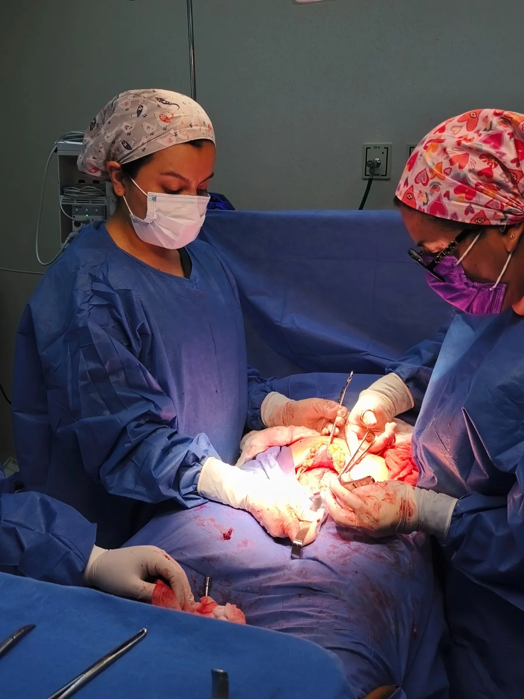
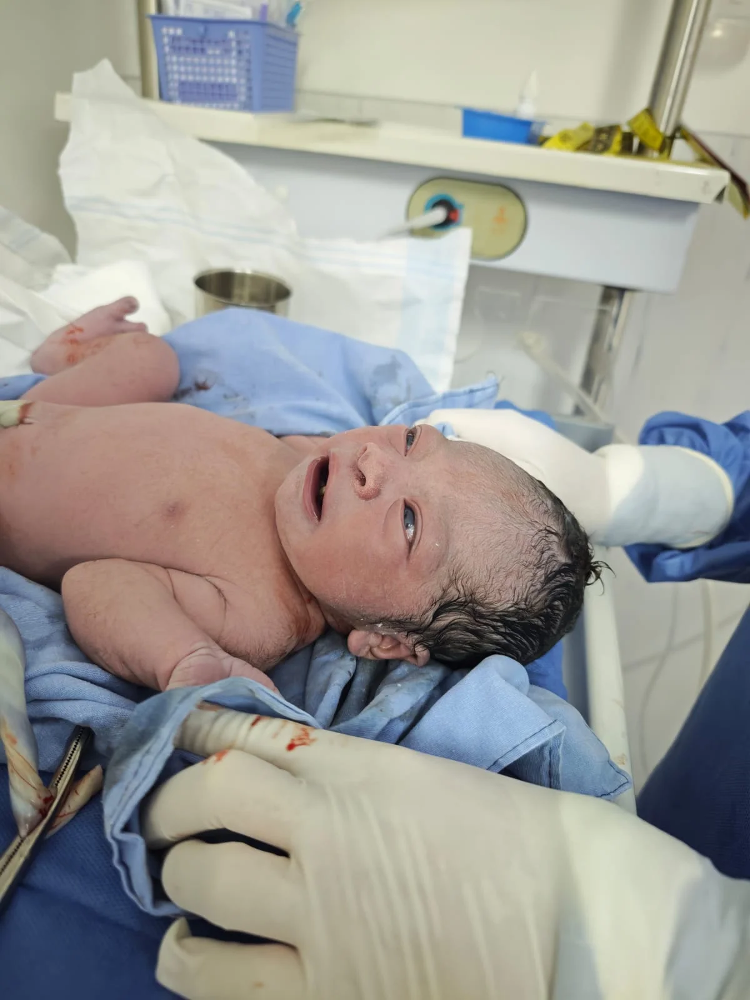
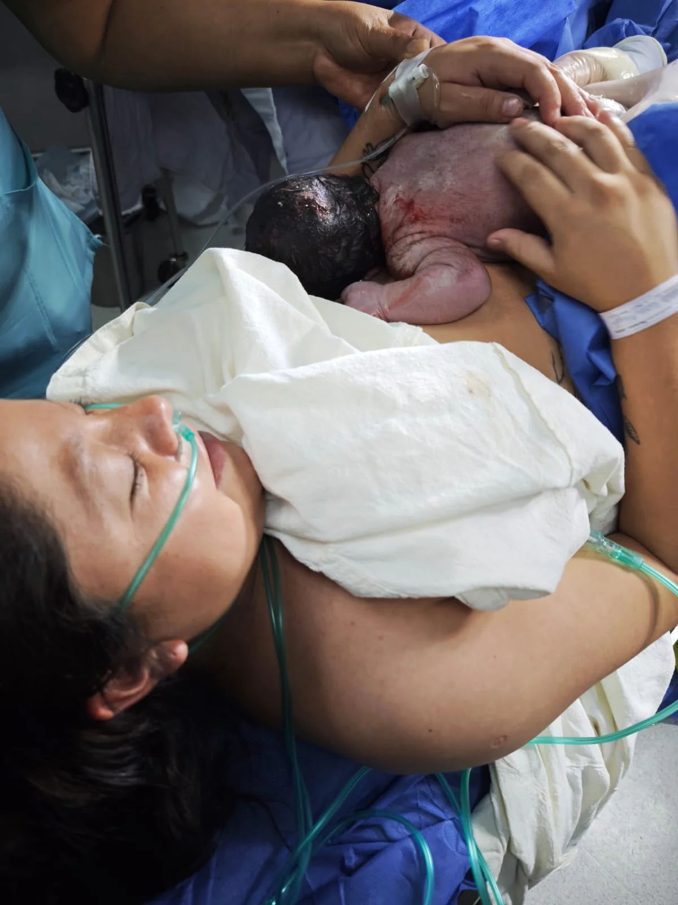
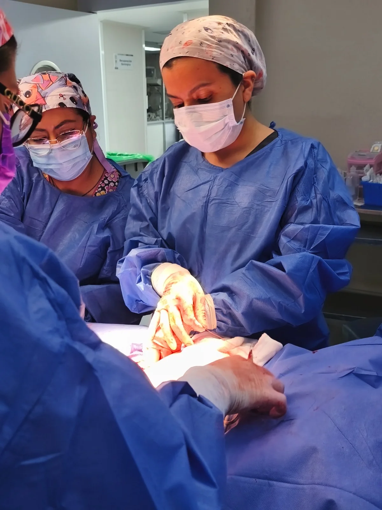
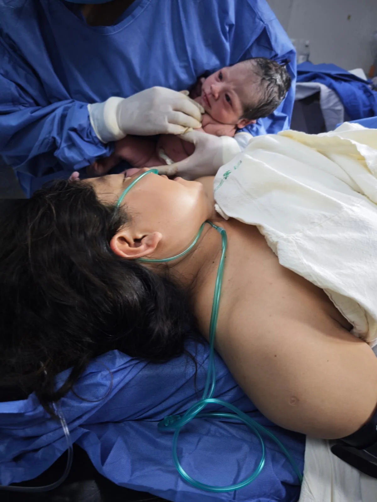

La prevención es la mejor inversión en tu salud. Realizar un chequeo ginecológico anual en CDMX con la Dra. Lidia Chávez te garantiza una valoración integral, profesional y sin dolor en la zona de Polanco.
Cuidamos de ti en un ambiente médico seguro, privado y empático en las instalaciones de Aurafem. Reserva tu cita preventiva fácil por WhatsApp.

El chequeo ginecológico anual en CDMX es una evaluación clínica metódica diseñada para examinar de manera integral el estado de salud del aparato reproductor femenino y las mamas, asegurando que todo funcione adecuadamente.
Con la Dra. Lidia Chávez en Polanco, la revisión preventiva abarca de forma clara:
Una de las mayores trampas en la salud femenina es asumir que si no hay dolor o sangrado inusual, todo está perfectamente bien. La realidad médica demuestra que la gran mayoría de las afecciones iniciales del cuello uterino (como las lesiones causadas por el VPH), los miomas pequeños o los cambios quísticos ovarios se desarrollan de manera silenciosa y sin dolor.
Acudir a tu revisión preventiva anual permite identificar cualquier pequeña variación celular antes de que genere molestias o complicaciones. Esto garantiza tratamientos significativamente más sencillos, menos invasivos y con tasas de éxito total.
Proceso estructurado en 4 pasos para brindarte total comodidad.
Reservas tu espacio en el consultorio de Polanco en la fecha que más te acomode.
Conversamos sobre tu estado de salud, hábitos, medicamentos y dudas actuales.
Exploración física cuidadosa y toma de muestra preventiva con técnica médica suave.
Entrega de indicaciones médicas, resolución de preguntas y plan preventivo personal.
La Dra. Lidia Chávez se distingue por brindar una consulta sin prisas, donde cada paciente es escuchada con empatía y respeto. Contamos con instalaciones médicas esterilizadas y una excelente ubicación en Aurafem, Polanco / Anzures.
Porque la mayoría de las alteraciones celulares en el cuello uterino, miomas pequeños, quistes de ovario o infecciones silenciosas no producen síntomas visibles en sus etapas iniciales. El chequeo anual permite detectarlas y solucionarlas a tiempo.
Incluye entrevista médica detallada, revisión del historial de salud, exploración clínica pélvica y mamaria, toma de citología Papanicolaou (o colposcopía si corresponde) y recomendaciones de salud reproductiva.
No. La medicina preventiva se basa en acudir precisamente cuando te sientes bien para confirmar que todo permanezca en perfecto estado de salud.
A partir del inicio de la vida sexual activa o desde los 21 años. En adolescentes también es recomendable si existen dudas sobre el ciclo o dolores menstruales severos.
Acude preferentemente fuera de tus días de menstruación, evita duchas u óvulos vaginales 48 horas antes y abstente de relaciones sexuales 24 a 48 horas previas al examen.
Puedes enviar un mensaje directo a través de WhatsApp. Coordinaremos tu cita en el consultorio de Aurafem en Polanco / Anzures rápidamente.
Conoce de cerca nuestro consultorio en Polanco, equipamiento y el entorno seguro de atención ginecológica.
 Chequeo ginecológico anual completo
Chequeo ginecológico anual completo

Exploración pélvica y mamaria preventiva
Revisión rutinaria antes de presentar síntomas Detección oportuna de quistes y miomas
Detección oportuna de quistes y miomas

Asesoría en salud menstrual y hormonal Consulta de prevención en Aurafem Polanco
Consulta de prevención en Aurafem Polanco

Cuidado integral anual de la mujer
Valoración médica experta con la Dra. LidiaLa Dra. Lidia Chávez brinda atención ginecológica en Polanco, CDMX, con un enfoque profesional, respetuoso y firmemente orientado al bienestar integral de cada paciente.

Atención médica para valoración de síntomas o dudas específicas.
Ver servicio →Estudio de detección preventiva en células del cuello uterino.
Ver servicio →Evaluación visual microscópica de precisión en el cérvix.
Ver servicio →Seguimiento continuo durante la gestación mes a mes.
Ver servicio →Acompañamiento humano en todos los trimestres de gestación.
Ver servicio →Diagnóstico, vacunación y valoración experta ante VPH.
Ver servicio →Atención en zona Miguel Hidalgo, cerca de Polanco, con un fácil acceso y conectividad desde Benito Juárez, Cuauhtémoc y zonas aledañas.
Cantú 11, Colonia Anzures, Miguel Hidalgo, 11590 Ciudad de México, CDMX.
La información contenida en esta página web posee fines exclusivamente educativos e informativos y bajo ningún concepto sustituye una valoración médica profesional en consultorio. Para recibir orientación médica adecuada, agenda una consulta formal con la especialista.
Escríbele directamente a la Dra. Lidia Chávez para revisar fechas disponibles, horarios de atención y resolver tus dudas de forma rápida.